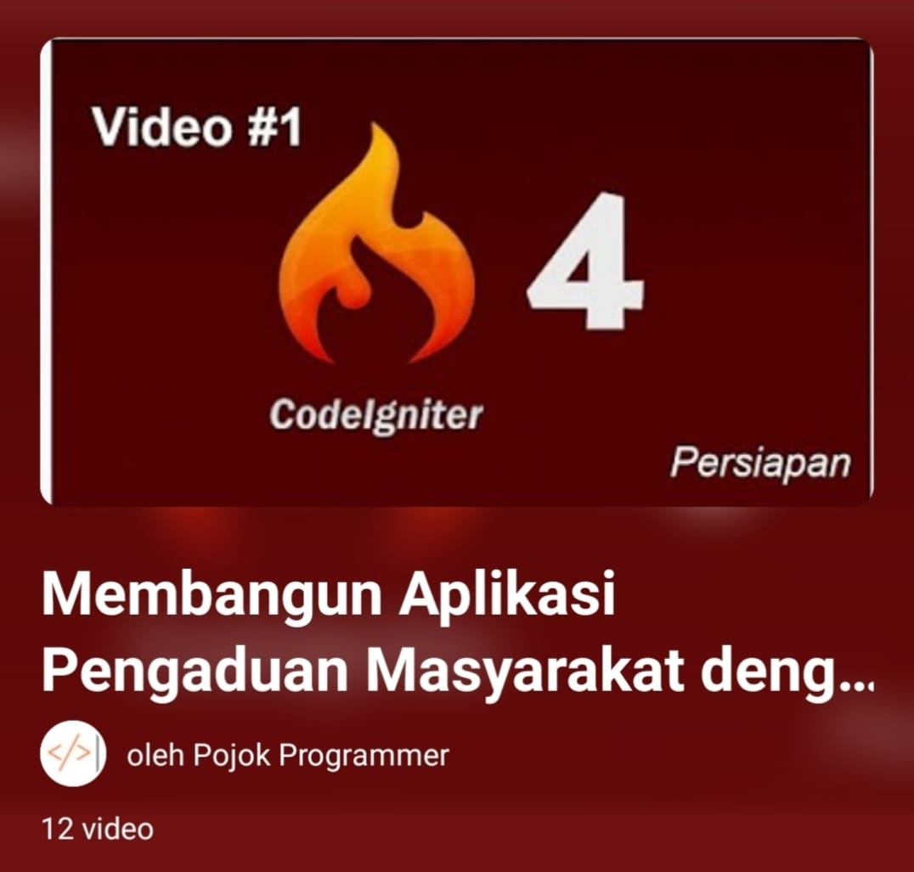
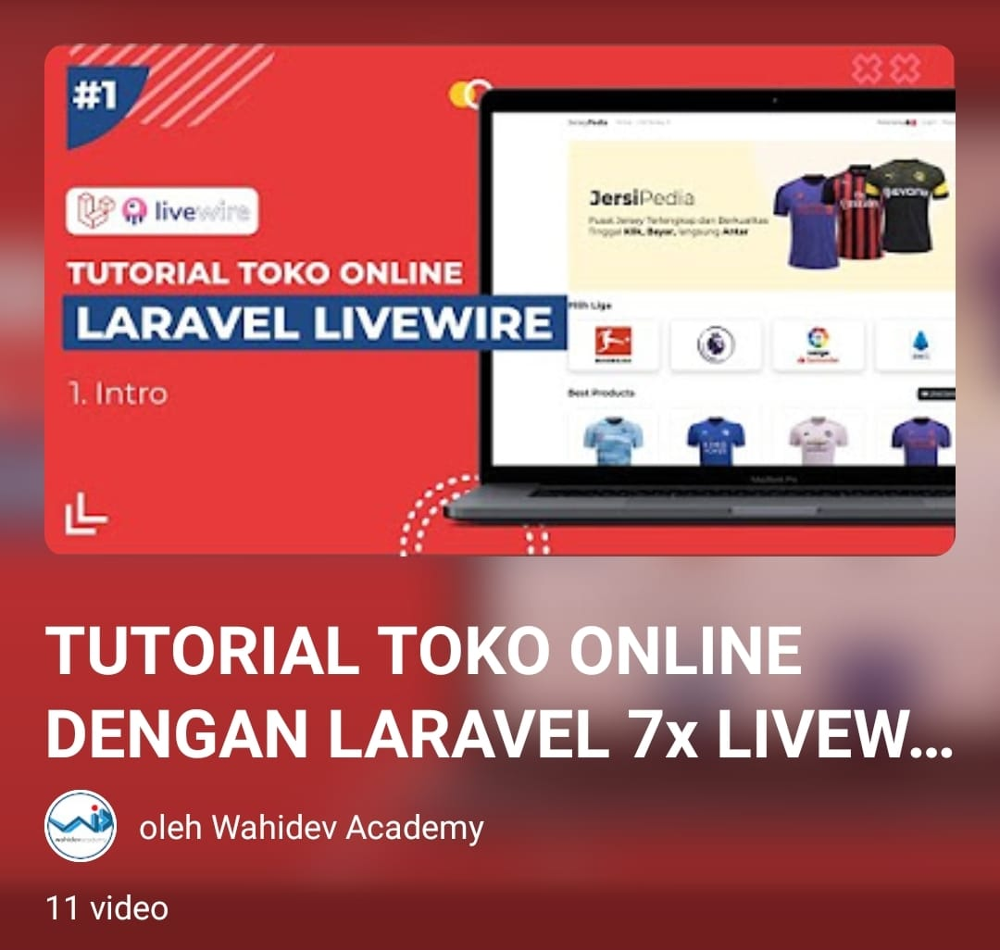
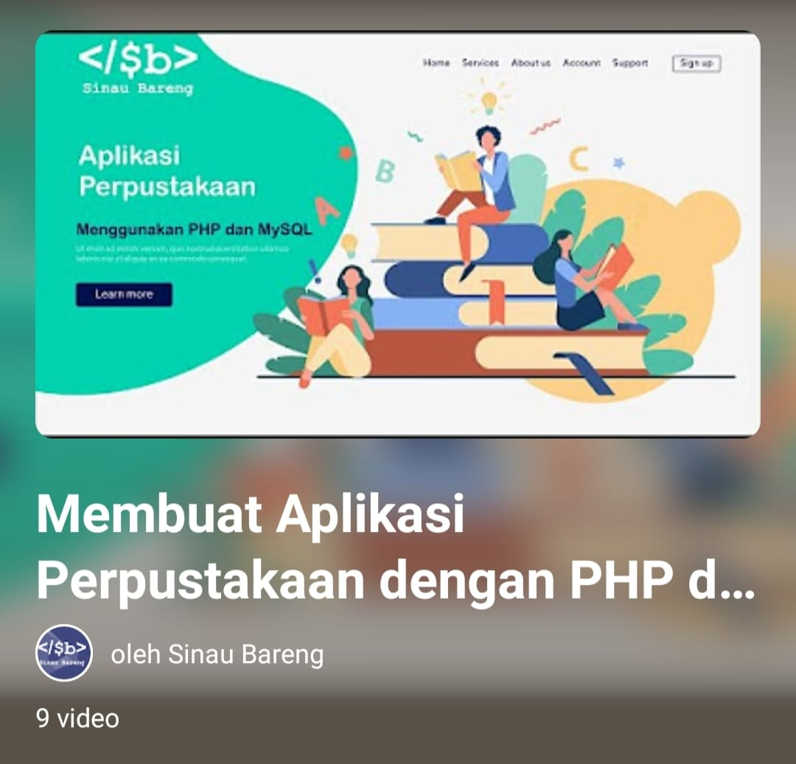

Membuat Aplikasi Pengaduan Masyarakat dengan CodeIgniter 4 Berbasis Website

Mentor: Pojok Programmer
Durasi: 12 video (total 24 jam)
Progress : 40/100
Hubungi Mentor : 081234567890
Kursus ini mengajarkan cara membangun aplikasi Pengaduan Masyarakat dengan CodeIgniter 4
|
Membuat Toko Penjualan Baju Online dengan Laravel Berbasis Website

Mentor: Wahidev Academy
Progress : 100/100
Hubungi Mentor : 081234567089
Membuat Aplikasi Perpustakaan dengan PHP dan MySQL Berbasis Website

Mentor: Sinau Bareng
Progress : 100/100
Hubungi Mentor : 081234567809
|